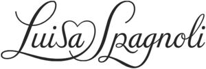

Trade Mark Journal No.2025/048 28 November 2025
WO0000001874071 (3,9,14,18,23,24,25,35)
Office of origin: Italy
Date of International Registration:19 March 2025
Date of designation in the UK:
19 March 2025

The mark consists of the wording "LUISA SPAGNOLI" in fancy characters with the initials in capital letter. The end of the letters "L" and "S" of "LUISA" are joined to form a stylized heart above the letter "A" of "LUISA".
International priority date claimed: 21 February 2025
(Italy)
(302025000030672)
- Class 3
- Perfumed creams; oils for perfumes and scents; perfumes; eau de parfum; toilet water; eau de Cologne; perfumery; cosmetic creams; fluid creams, cosmetics; moisturising gels, cosmetics; cosmetic soaps; cakes of toilet soap; cosmetics; lipsticks; lipstick cases; powder for make-up; powder compacts, cosmetics; rouges; make-up foundations; eyeliner; make-up pencils; mascara; eyelid shadow; eyeshadow palettes; make-up.
- Class 9
- Spectacles; sunglasses; fashion eyeglasses; prescription sunglasses; frames for spectacles and sunglasses; spectacle cases; cases for sunglasses; spectacle temples; sunglass temples; spectacle chains; spectacle cords; spectacle lanyards.
- Class 14
- Watch bands; watch chains; clock cases; medals; key rings, split rings with trinket or decorative fob; paste jewellery; cases for watches [presentation]; jewellery; clock hands; imitation jewellery ornaments; semi-precious articles of bijouterie; body costume jewellery; necklaces, jewellery; choker necklaces; bracelets; bracelets, jewellery; rings, pendants; rings, jewellery; pendants, jewellery; pins, jewellery; tie pins; earrings; jewel pendants.
- Class 18
- Leather leashes; purses; beach bags; handbags; key cases; bags; leather purses; briefcases, leather goods; travelling sets, leatherware; bags for sports; clutches, purses; garment bags; evening bags; evening handbags; hand bags; cross-body bags; shoulder bags; shoe bags; canvas bags; garment carriers; knitted bags; knitted bags, not of precious metals; chain mesh purses; casual bags; bucket bags; small clutch purses; work bags; drawstring bags; valises; daypacks; rucksacks; umbrellas; walking sticks; cosmetic purses; bumbags; card cases, notecases; pocket wallets; luggage tags; baggage tags.
- Class 23
- Yarn; cotton thread and yarn; sewing thread and yarn; embroidery thread and yarn; elastic thread and yarn for textile use; rubber thread for textile use; glass fiber thread and yarn; semi-synthetic fiber thread and yarn, chemically treated natural fiber yarn; darning thread and yarn; yarns and threads; elastic thread; synthetic threads; worsted yarn; linen thread and yarn; yarns made of synthetic material for textile use; silk thread and yarn; elastic strips of synthetic fibres for textile use.
- Class 24
- Textiles; textile material; textile for linen; elastic woven fabrics; silk, cloth; printed textile piece goods; apparel fabrics; elastic fabrics for clothing; fabric for use in the manufacture of bags; fabric for use in the manufacture of wallets; bed linen and blankets; textiles and substitutes for textiles; breathable waterproof fabrics; lingerie fabric; knit lace fabrics; silk-wool mixed fabrics; mixed fiber fabrics; fabrics for underwear; elastic yarn mixed fabrics; linens; kitchen linen; terry linen; diapered linen; household linen; bath linen; sew-on tags of textile for clothing; adhesive tags of textile for bags; curtains of textile or plastic; textile tissues; handkerchiefs of textile.
- Class 25
- Boots; half-boots; belts, clothing; pullovers; pullover sweaters; clothing; combinations, clothing; scarves; sashes for wear; jackets, clothing; shoes; dress shoes; bandanas, neckerchiefs; clothing of leather; women's ceremonial dresses; dress pants; cashmere clothing; underwear; waterproof clothing; visors being headwear; shoulder straps for clothing; evening wear; beach clothes; cowls, clothing; roll necks, clothing; clothing for gymnastics; jackets being sports clothing; sweaters; short-sleeve shirts; dresses; evening dresses; shoe soles; blouses; top, clothing; neck scarves, mufflers; foulards, clothing articles; snoods, scarves; casual jackets; trench coats; down jackets; coats; leather jackets; jeans; denim jeans; blazers; cardigans; shirts; tee-shirts; polo shirts; denim jackets; trousers; shorts; skirts; culotte skirts; headgear; caps being headwear; hats; headwear; millinery; headbands, clothing; headscarves; footwear; deck shoes; slippers; flip-flops, slippers; flip-flops; espadrilles; sandals; wooden shoes; bath robes; beach robes; bikinis; wedding dresses; suits; socks and stockings; bathing suits; neckties; pyjamas; dressing gowns; sportswear; children's wear; uniforms; pocket handkerchiefs of textile.
- Class 35
- Shop window dressing; economic forecasting; rental of advertising space; organization of trade fairs; online advertising on a computer network; presentation of goods on communication media, for retail purposes; administrative processing of purchase orders; commercial administration of the licensing of the goods and services of others; organization of fashion shows for promotional purposes; arranging business introductions relating to the buying and selling of products; wholesale and retail sale services, including online and offline, for perfumed creams, oils for perfumes and scents, perfumes, eau de parfum, toilet water, eau de Cologne, perfumery, cosmetic creams, fluid creams being cosmetics, moisturising gels being cosmetics, cosmetic soaps, cakes of toilet soap, cosmetics, lipsticks, lipstick cases, powder for make-up, powder compacts being cosmetics, rouges, make up foundations, eyeliner, make-up pencils, mascara, eyelid shadow, eyeshadow palettes, make-up; wholesale and retail sale services, including online and offline, for spectacles, sunglasses, fashion eyeglasses, prescription sunglasses, frames for spectacles and sunglasses, spectacle cases, cases for sunglasses, spectacle temples, sunglass temples, spectacle chains, spectacle cords, spectacle lanyards; wholesale and retail sale services, including online and offline, for watch bands, watch chains, clock cases, medals, key rings, split rings with trinket or decorative fob, paste jewellery, cases for watches presentation, jewellery, clock hands, imitation jewellery ornaments, semi-precious articles of bijouterie, body costume jewellery, necklaces being jewellery, choker necklaces, bracelets, bracelets being jewellery, rings being pendants, rings being jewellery, pendants being jewellery, pins being jewellery, tie pins, earrings, jewel pendants; wholesale and retail sale services, including online and offline, for leather leashes, purses, beach bags, handbags, key cases, bags, leather purses, briefcases being leather goods, travelling sets being leatherware, bags for sports, clutches being purses, garment bags, evening bags, evening handbags, hand bags, cross-body bags, shoulder bags, shoe bags, canvas bags, garment carriers, knitted bags, knitted bags not of precious metals, chain mesh purses, casual bags, bucket bags, small clutch purses, work bags, drawstring bags, valises, daypacks, rucksacks, umbrellas, walking sticks, cosmetic purses, bumbags, card cases being notecases, pocket wallets, luggage tags, baggage tags; advertising, marketing and promotional services; advertising particularly services for the promotion of goods; promotion services; business promotion; promotion of fairs for trade purposes; Internet marketing; marketing; wholesale and retail sale services, including online and offline, for yarn, cotton thread and yarn, sewing thread and yarn, embroidery thread and yarn, elastic thread and yarn for textile use, rubber thread for textile use, glass fiber thread and yarn, semi-synthetic fiber thread and yarn being chemically treated natural fiber yarn, darning thread and yarn, yarns and threads being elastic thread, synthetic threads, worsted yarn, linen thread and yarn, yarns made of synthetic material for textile use, silk thread and yarn, elastic strips of synthetic fibres for textile use; wholesale and retail sale services, including online and offline, for textiles, textile material, textile for linen, elastic woven fabrics, silk being cloth, printed textile piece goods, apparel fabrics, elastic fabrics for clothing, fabric for use in the manufacture of bags, fabric for use in the manufacture of wallets, bed linen and blankets, textiles and substitutes for textiles, breathable waterproof fabrics, lingerie fabric, knit lace fabrics, silk-wool mixed fabrics, mixed fiber fabrics, fabrics for underwear, elastic yarn mixed fabrics, linens, kitchen linen, terry linen, diapered linen, household linen, bath linen, sew-on tags of textile for clothing, adhesive tags of textile for bags, curtains, textile tissues, pocket handkerchiefs of textile, handkerchiefs of textile; wholesale and retail sale services, including online and offline, for boots, half-boots, belts being clothing, pullovers, pullover sweaters, clothing, combinations being clothing, scarves, sashes for wear, jackets being clothing, shoes, dress shoes, bandanas being neckerchiefs, clothing of leather, women's ceremonial dresses, dress pants, cashmere clothing, underwear, waterproof clothing, visors being headwear, shoulder straps for clothing, evening wear, beach clothes, cowls being clothing, roll necks being clothing, clothing for gymnastics, jackets being sports clothing, sweaters, short-sleeve shirts, dresses, evening dresses, shoe soles, blouses, top being clothing, neck scarves being mufflers, foulards being clothing articles, snoods being scarves, casual jackets, trench coats, down jackets, coats, leather jackets, jeans, denim jeans, blazers, cardigans, shirts, tee-shirts, polo shirts, denim jackets, trousers, shorts, skirts, culotte skirts, headgear, caps being headwear, hats, headwear, millinery, headbands being clothing, headscarves, footwear, deck shoes, slippers, flip-flops, slippers, flip-flops, espadrilles, sandals, wooden shoes, bath robes, beach robes, bikinis, wedding dresses, suits, socks and stockings, bathing suits, neckties, pyjamas, dressing gowns, sportswear, children's wear, uniforms; modelling for advertising or sales promotion; commercial assistance in business management; consultancy services regarding business strategies; providing assistance in the management of franchised businesses; advisory services relating to publicity for franchisees; assistance in product commercialization, within the framework of a franchise contract; loyalty scheme services; management of customer loyalty, incentive or promotional schemes; market survey analysis; promotion of goods and services through sponsorship; dissemination of advertising matter online; online data processing services; on-line advertising and marketing services; provision of online price comparison services; providing user reviews for commercial or advertising purposes; organization of trade fairs for commercial or advertising purposes; planning and conducting of trade fairs, exhibitions and presentations for economic or advertising purposes.
Luisa Spagnoli S.p.A.
Representative: Studio Professionale Associato a Baker & McKenzie, Piazza Filippo Meda 3 , I-20121 Milano, ITALY